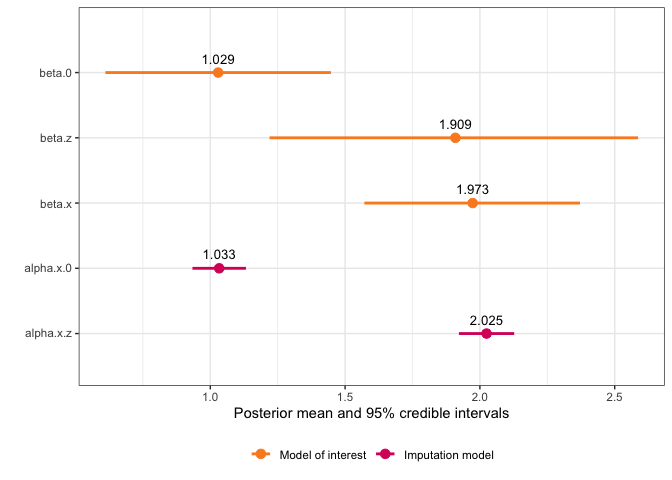

Fitting measurement error models and missing data imputation models in INLA is not trivial, and requires several workarounds in order to fit the model. At the same time, a Bayesian hierarchical framework is very attractive for modeling these types of data, since the hierarchical model structure allows us to describe how the data were collected, and any errors they may have, through the model specification. By supplying informative priors, we may be able to adjust for biases due to these errors, and propagate any uncertainty they cause. Until recently, it has been complicated to implement these kinds of models in R-INLA. This package provides a helpful interface that makes measurement error and missing data modelling in R-INLA much more feasible.
Installation
You can install the package directly from CRAN with:
install.packages("inlamemi")Alternatively, you can install the development version of inlamemi from GitHub with:
# install.packages("devtools")
devtools::install_github("emmaSkarstein/inlamemi")When should I use this package?
This package is designed for fitting models where you have one covariate that has classical measurement error, Berkson measurement error, missing observations, or any combination of these three. That could mean that you only have missing data, and if so this package can do missing data imputation.
The model itself must be of the class of models that is possible to fit with R-INLA. That means that it can be used for most common regression types, like linear regression and logistic regression, and you can include as many error free covariates as needed. You can also include random effects, the same way as you would normally include such effects in R-INLA. Interaction effects with the error prone variable are also dealt with by the package. It is even possible to fit models for cases where you have multiple variables with error or missingness, though this is something one should be careful with, as these models rely very heavily on the priors you give them.
Overview of examples
Examples of how to use the package can be found in the vignettes.
| Vignette name | Likelihood for MOI | Error type | Other features |
|---|---|---|---|
| Influence of systolic blood pressure on coronary heart disease | Binomial | Classical | Repeated measurements of error prone variable, interaction effect with error variable |
| Survival model with repeated systolic blood pressure measurements | Weibull survival | Classical, missing | Repeated measurements of error prone variable |
| Simulated examples (multiple examples) | Gaussian, Binomial, Poisson | Berkson, classical, missing | Random effect(s) in the model of interest, interaction effects |
| Multiple variables with measurement error and missingness | Gaussian | Classical | Multiple mismeasured covariates |
| Modifying the default plot | Shows how to modify the plot produced by the plot.inlamemi function. |
||
| How are the models structured? | A deep dive into how the data is structured in order to correctly fit the model. | ||
How to avoid using inlamemi |
An illustration of how the models can be fit without using inlamemi, in case you would like to extend the model in a way beyond what inlamemi will allow. This vignette can also be useful if you are familiar with R-INLA and want to understand how the models are structured. |
Quick guide: How can I use this package?
The dataset simple_data is included in the package, and is a very simple simulated data set, used to illustrate the package. In this data set, we have a response variable , an error free covariate , and a covariate that is observed with classical error, Berkson error and missingness, called . We wish to fit the model
but adjusting for all the errors in .
First load the package:
Next, we need to specify the formula for the main model and the formula for the imputation model. This is done in the standard way in R:
main_formula <- y ~ x + zFor the imputation model, we take advantage of any correlation between and the error free covariate , so the imputation model will be
We write that as
imputation_formula <- x ~ zWhen adjusting for measurement error, we are completely dependent on having some information about the measurement error variances (for the classical error) and (for the Berkson error), since the size of this variance will affect how the estimates are biased. We can gain information about these variances in a few different ways, if repeated measurements have been made then these can be put directly into the model to estimate the error variance, or if we have some expert knowledge about the error size, then that can be used to specify an informative prior for the variance (or precision, since in INLA the precision is used, rather than the variance).
In this case, since we have in fact simulated the data ourselves, we know that the error variances are in both cases close to 1, so we specify priors that have modes at 1.
In the fit_inlamemi function we also need to specify the likelihood for the model of interest, which in this case is Gaussian.
simple_model <- fit_inlamemi(data = simple_data,
formula_moi = main_formula,
formula_imp = imputation_formula,
family_moi = "gaussian",
error_type = c("berkson", "classical", "missing"),
prior.prec.moi = c(10, 9),
prior.prec.berkson = c(10, 9),
prior.prec.classical = c(10, 9),
prior.prec.imp = c(10, 9),
prior.beta.error = c(0, 1/1000),
initial.prec.moi = 1,
initial.prec.berkson = 1,
initial.prec.classical = 1,
initial.prec.imp = 1)Once we have fit the model, we can view the summary:
summary(simple_model)
#> Formula for model of interest:
#> y ~ x + z
#>
#> Formula for imputation model:
#> x ~ z
#>
#> Error types:
#> [1] "berkson" "classical" "missing"
#>
#> Fixed effects for model of interest:
#> mean sd 0.025quant 0.5quant 0.975quant mode
#> beta.0 1.029734 0.2192649 0.611786 1.027337 1.441360 1.023829
#> beta.z 1.910320 0.3888428 1.225565 1.899260 2.569838 1.909285
#>
#> Coefficient for variable with measurement error and/or missingness:
#> mean sd 0.025quant 0.5quant 0.975quant mode
#> beta.x 1.973047 0.2044895 1.566493 1.974404 2.371636 1.980101
#>
#> Fixed effects for imputation model:
#> mean sd 0.025quant 0.5quant 0.975quant mode
#> alpha.x.0 1.033082 0.05058036 0.9338513 1.033090 1.132266 1.033090
#> alpha.x.z 2.024703 0.05224236 1.9222875 2.024685 2.127221 2.024685
#>
#> Model hyperparameters (apart from beta.x):
#> mean sd 0.025quant 0.5quant
#> Precision for model of interest 1.1284762 0.3651824 0.5643224 1.0775830
#> Precision for x berkson model 1.1270935 0.3502996 0.5871622 1.0778489
#> Precision for x classical model 0.9274713 0.1107587 0.7291709 0.9207291
#> Precision for x imp model 0.9771797 0.1269574 0.7504628 0.9692680
#> 0.975quant mode
#> Precision for model of interest 1.985783 0.9838628
#> Precision for x berkson model 1.952024 0.9863724
#> Precision for x classical model 1.164627 0.9070096
#> Precision for x imp model 1.249446 0.9540553And we can use the default plot function to see a plot of the fixed effects and estimated coefficient for the variable with error:
plot(simple_model)